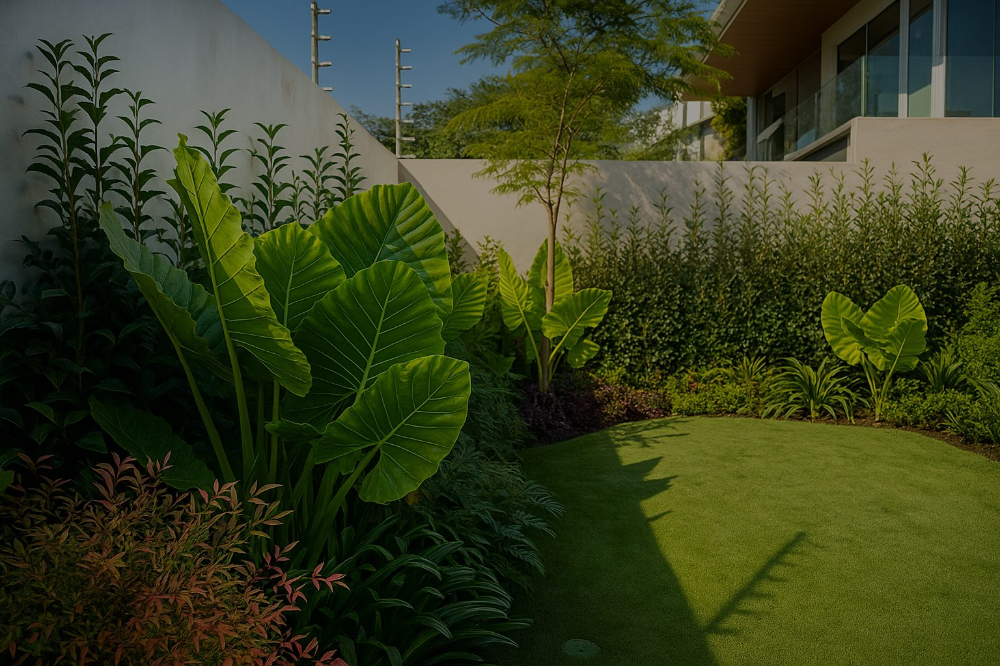
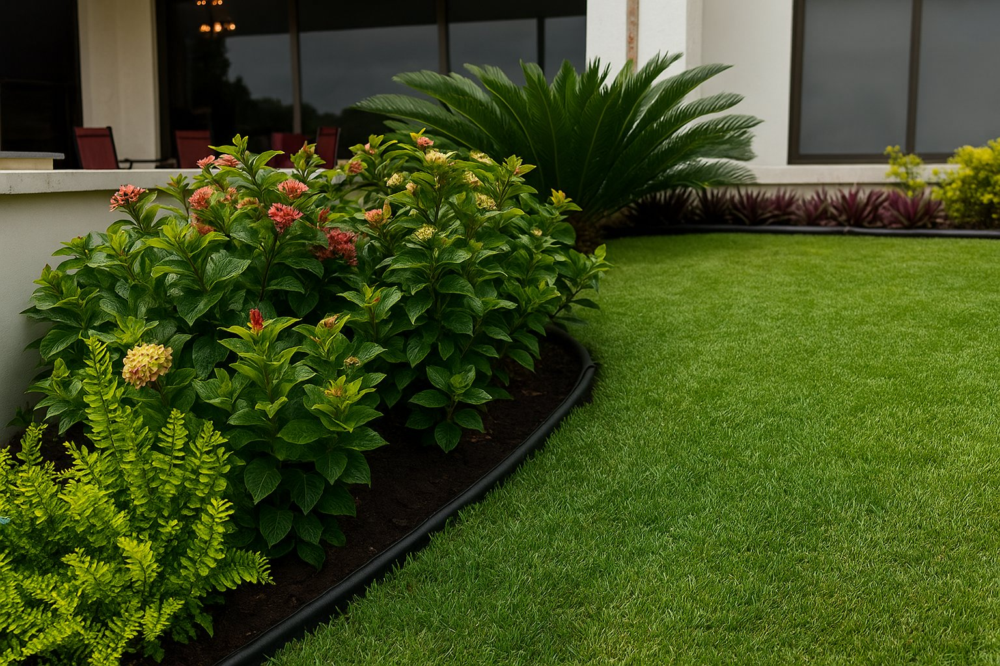
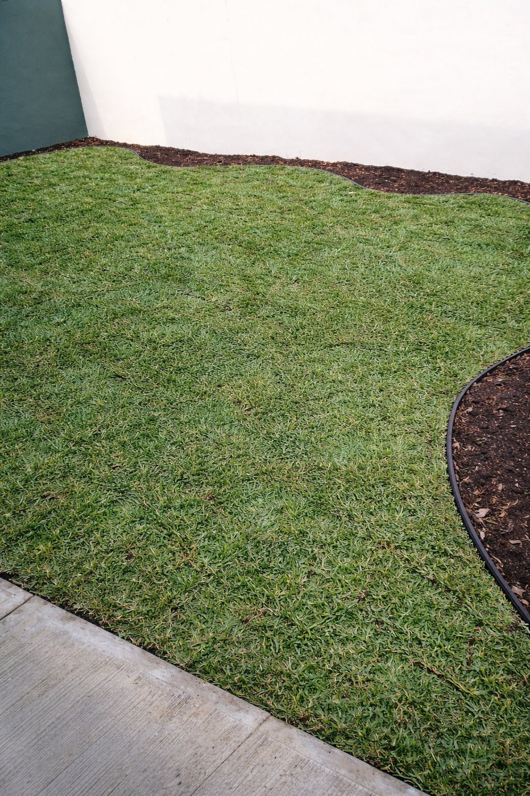
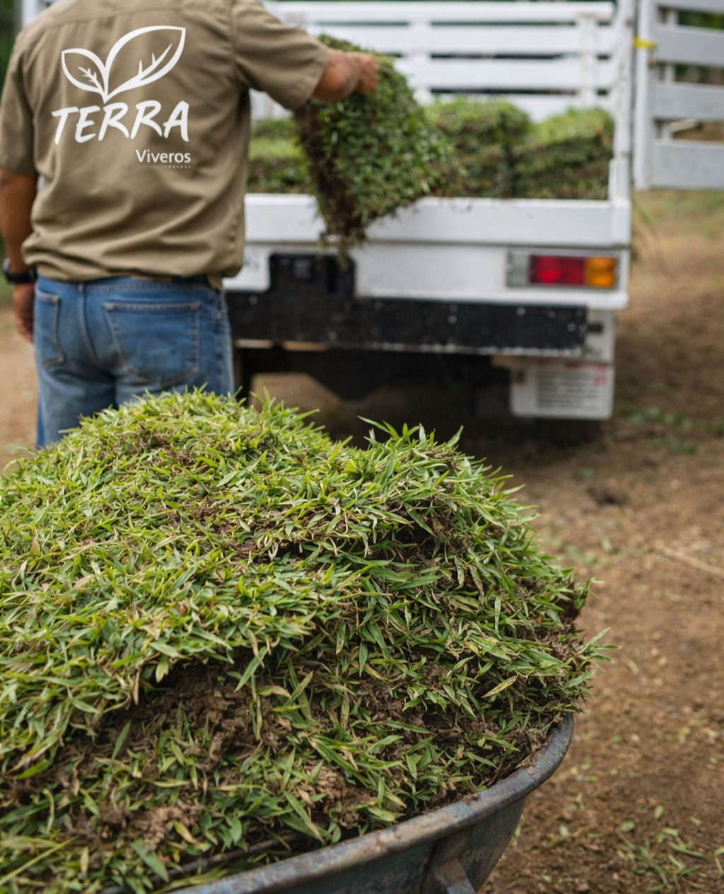
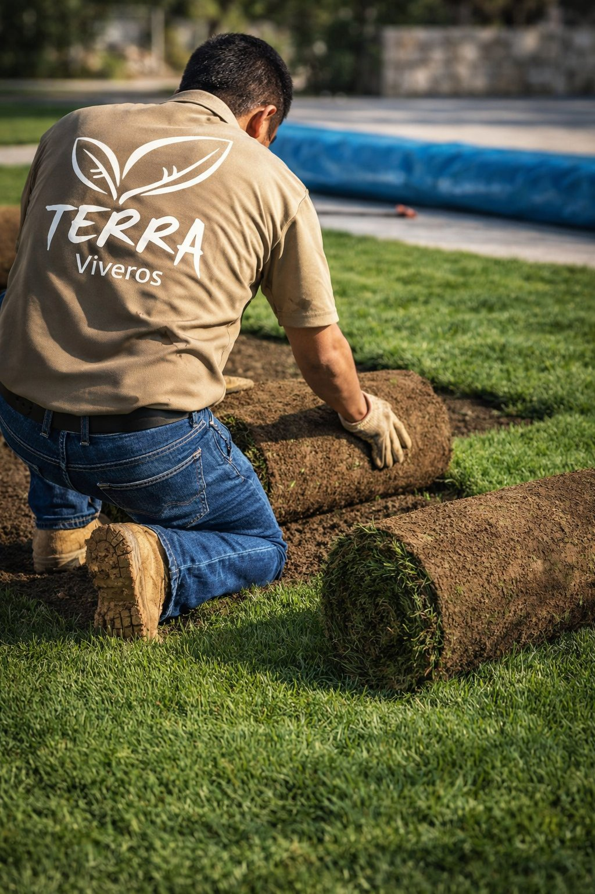

Proyectos reales
Jardines con pasto San Agustín en Tampico




Pasto San Agustín fresco directo del campo desde $85/m². Sin sorpresas en el precio. Con garantía de arraigo en 21 días. Tampico · Madero · Altamira.
Sin compromiso · Respuesta en menos de 1 hora · Lun–Sáb 9am–6pm
Calcula en segundos. Cotiza exacto por WhatsApp con un solo clic.
Este es un precio orientativo. El costo final puede ser menor según el volumen exacto que confirmes. La cotización real la hacemos por WhatsApp en minutos.
Entrega no incluida. El costo de entrega varía según tu distancia y colonia. Sin cargos ocultos — se cotiza por separado.
La instalación se cotiza a tu medida — y eso te conviene
El precio de instalación depende de tu terreno: distancia, si necesita nivelación, herbicida o tierra negra. Cotizar genérico sería cobrarte de más. Mándanos una foto de tu jardín y te respondemos en menos de 1 hora con el precio exacto.
Evaluación del terreno sin costo — antes de cualquier cobro
Garantía de arraigo en 21 días incluida con instalación
Pagas cuando ves tu jardín listo — sin pago total por adelantado
A mayor volumen, menor precio por m²
Los proyectos de escala merecen un trato diferente. Tu cotización de mayoreo incluye precio especial por volumen, entrega coordinada y factura CFDI — todo en un solo mensaje de WhatsApp.
Somos el vivero preferido de constructoras y arquitectos en Tamaulipas. El precio que recibes por WhatsApp es el mejor que vamos a poder darte — sin rodeos.
Sin compromiso · Respuesta en menos de 1 hora
¿Te ofrecieron pasto más barato? Aquí lo que no te dijeron.
| Característica | Viveros Terra | Pasto de mercado |
|---|---|---|
| Frescura del corte | Cortado esta semana | Días en bodega sin agua |
| Arraigo en Tampico | 14–21 días garantizados | Variable, sin garantía |
| Garantía de arraigo | Con instalación | No existe |
| Precio | Desde $85/m² | "Barato" que sale caro |
| Forma de pago | Pagas cuando ves el resultado | Todo por adelantado |
| Soporte post-instalación | Protocolo 21 días incluido | Te lo deja y se va |
| Factura CFDI | Disponible | Rara vez |
"El pasto barato que no arraiga cuesta el doble: lo que pagaste más lo que vas a volver a comprar."

Compras el pasto fresco y tú coordinas la instalación con tu jardinero de confianza. Lo mejor: recibes el mismo pasto de vivero que usamos en instalaciones completas.

El servicio completo llave en mano. Nosotros hacemos todo: preparación, entrega, instalación, primer riego y protocolo de cuidados. Tu jardín listo en un día.
Para constructoras, arquitectos y desarrollos. Precio menor por volumen, entrega por etapas y factura CFDI. Somos el vivero de confianza en Tamaulipas.
Sin sorpresas, sin visitas obligatorias, sin pagar todo por adelantado.
Usa la calculadora de arriba o mándanos una foto de tu jardín por WhatsApp con los m² aproximados. Cotizamos pasto, entrega e instalación por separado — tú decides qué contratas. Sin paquetes forzados.
No. Pagas cuando ves tu jardín terminado. Sin pago total por adelantado, sin sorpresas. Lo importante es que empieces con tranquilidad y que confíes en el resultado.
Evaluamos sin costo adicional. Te decimos si necesita herbicida, nivelación o tierra negra, y cuánto cuesta cada uno. Nunca te cobramos preparación sin avisarte antes.
Sí. Nuestro pasto se corta semanalmente y va directo del campo a tu jardín. Nunca tenemos rollos viejos almacenados. Lo que instalamos hoy fue cortado esta semana.
Si contratas instalación y sigues el protocolo de cuidados de 21 días que te entregamos, garantizamos el arraigo. Si alguna sección falla, la reponemos sin costo. Sin excusas.
El documento que te entregamos junto con la instalación


"Contraté pasto e instalación para 180 m² en mi jardín de Madero. Llegaron a la hora acordada, prepararon el terreno y quedó perfecto en un día. A las 3 semanas estaba completamente arraigado. Lo más importante: pagué el resto hasta que lo vi terminado."
"Somos constructora y compramos el pasto para un fraccionamiento en Altamira. Precio de mayoreo muy competitivo, facturaron sin problema y respetaron el calendario de entrega por etapas. Ya son nuestro proveedor recurrente."
Al contratar instalación recibes este documento completo: qué hacer cada día, señales de buen arraigo, qué evitar y cómo activar tu garantía si algo falla. Diseñado para que tu pasto prenda sí o sí.
Más de 20 años suministrando pasto para fraccionamientos, hoteles, parques industriales y desarrollos residenciales en todo el sur de Tamaulipas. Precio de mayoreo, logística coordinada y factura CFDI.
La base ideal antes de instalar pasto. Costal $90 · m³ $1,500
Ver opcionesPara que tu pasto siempre esté verde sin esfuerzo. Ahorra hasta 40% de agua.
Ver más¿Ya tienes tu pasto? Que nunca se vea descuidado. Desde $750/mes.
Ver másCotización en menos de 1 hora. Sin compromiso. Pagas cuando ves tu jardín listo.